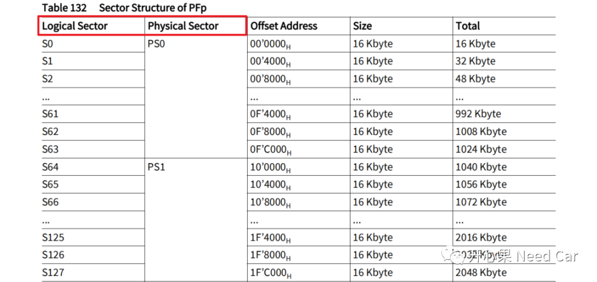
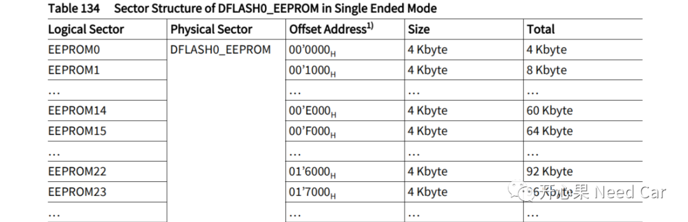
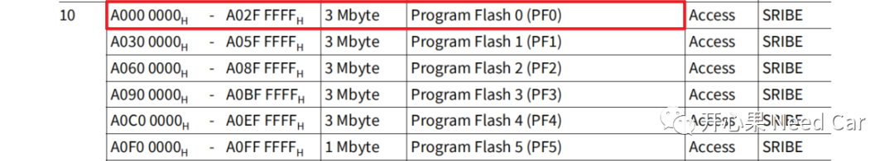
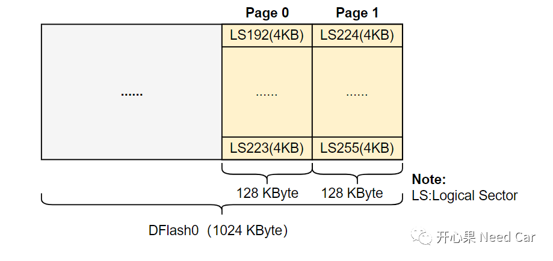
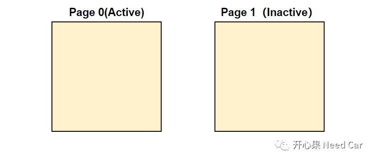
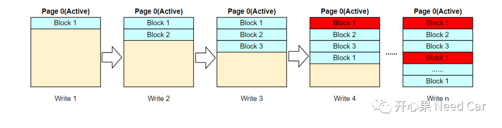
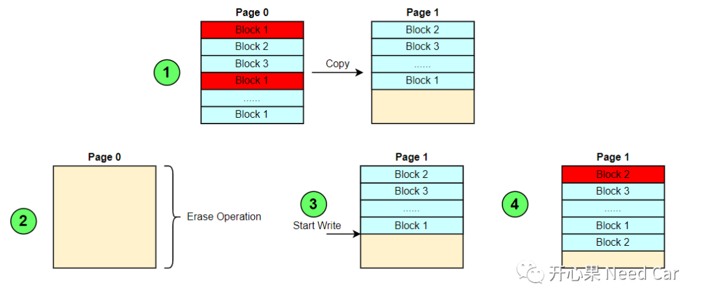

开心果 Need Car · 2022-11-06T14:02:00+08:00 · 微信原文
NVM（Non Volatile Memory）的知识体系中，如果不稍加区分，很容易混淆一些概念。eg：Flash操作的Page，和NVM存储时的Page（"页"）是一个概念吗？本文，聚焦NVM的一些基础概念，夯实基础，是我们理解上层的基石。
1、Physical Sector & Logical Sector
Physical Sector（物理扇区）：一个物理扇区包含多个逻辑扇区（logical sector）。
Logical Sector（逻辑扇区）：Flash擦除的最小单位，项目中常说的Sector，多指逻辑扇区。一个逻辑扇区可以包含多个wordline。
提示：Wordline：字节对齐单位，不同的Flash，对齐字节数不同。TC3xx中，PFlash的Wordline = 1024 Bytes，对于DFlash，single ended模式下：Wordline = 512Bytes， complement sensing模式下：Wordline = 256Bytes。
（一）PFlash，Physical Sector与Logical Sector关系
对于PFlash，Physical Sector与Logical Sector的关系如下所示：

（二）DFlash，Physical Sector与Logical Sector关系
对于DFlash（Single Ended模式），Physical Sector与Logical Sector的关系如下所示：

2、Physical Sector & Bank
Bank（块）：可以包含多个Physical Sector，与其他内存区物理隔离。比如：PF0（Program Flash 0）等同于Bank，包含3个PS（Physical Sector）。物理隔离是指两块内存区不相关，eg：PF0与PF1在物理上隔离，即使没有PF1也不影响PF0，这也是不同芯片型号，内存空间可以不同的原因，不同芯片型号，Bank数量不同，内存大小也就有所不同。TC397 PFn大小如下所示：

3、Page
Page（页）：Flash Driver编程（写操作）的最小单位。对于不同的物理内存类型，一个Page的大小不同。eg：TC3xx中，对于PFlash，一个Page = 32 Bytes；而对于DFlash，一个Page = 8 Bytes。
提示：Flash的最小擦除单位是Logical Sector，最小编程（写）单位是Page。
4、Block
即：Block是用户操作的最小写/擦除单位，可以由一个或者多个虚拟页组成。Block的大小可以根据项目的实际情况设置，eg：200Byte。虚拟页（Virtual page）由一个或者多个物理Page构成，即：前面提到的Page。
（一）切页中的"页"与Page（"页"）是什么关系？


提示：换页也有称Bank Swap，注意理解。
存储步骤：
在激活的Page0中写入Block1数据；
在Block1的后面写Block2的数据；
在Block2的后面写Block3的数据；
在Block3的后面写Block1的数据，同时将第一次写入Block1的数据设置成无效；
最终，Page0会有写满的时刻，如下所示：


往期精彩回顾